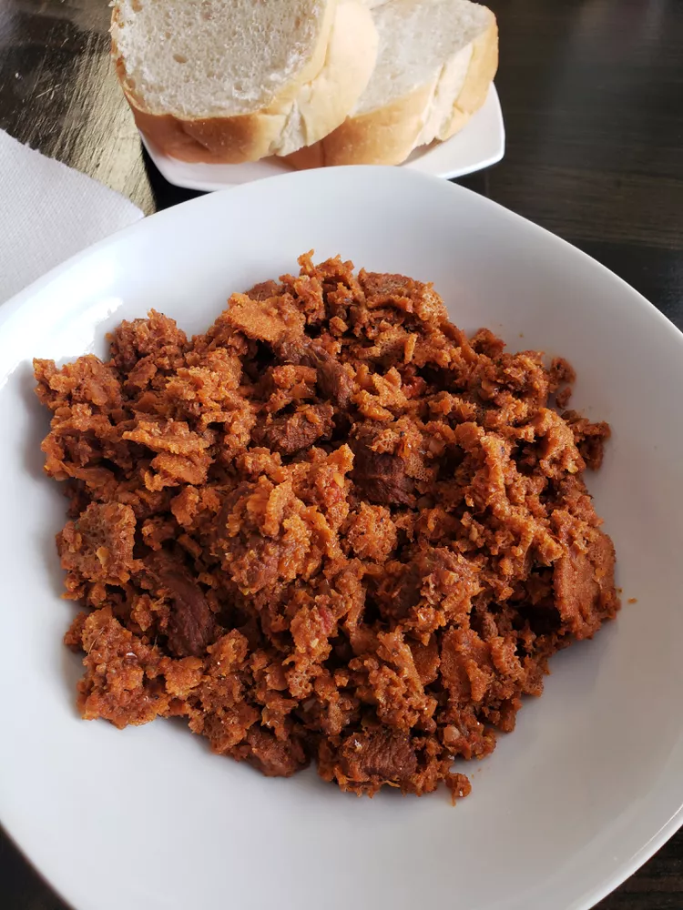

Quanta firfir

This is a popular traditional Ethiopian dish. This quanta firfir recipe can also be made with fresh beef or lamb!
Ingredients
- 2 red onions, chopped
- ⅓ cup vegetable oil
- 1 tablespoon garlic paste
- 4 ripe tomatoes, chopped
- 3 cups water, divided
- 14 ounces dried beef
- 2 tablespoons Ethiopian berbere seasoning
- ½ cup Ethiopian kibbeh (spiced clarified butter)
- 2 teaspoons salt
- 2 pieces injera (Ethiopian bread)